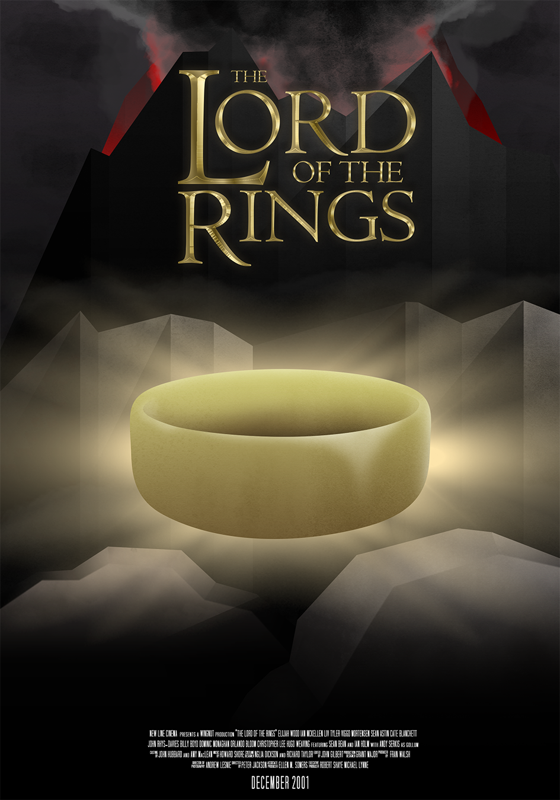
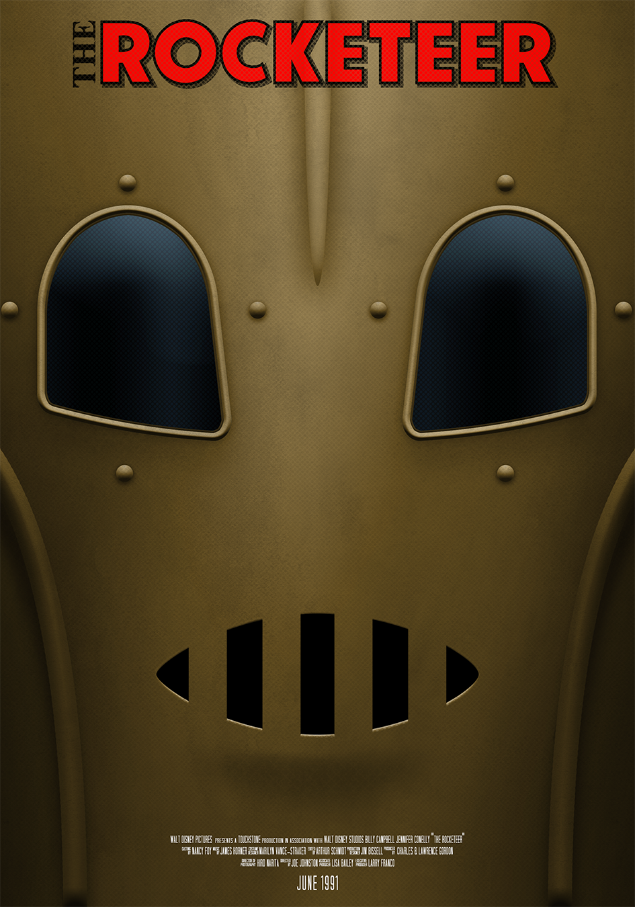
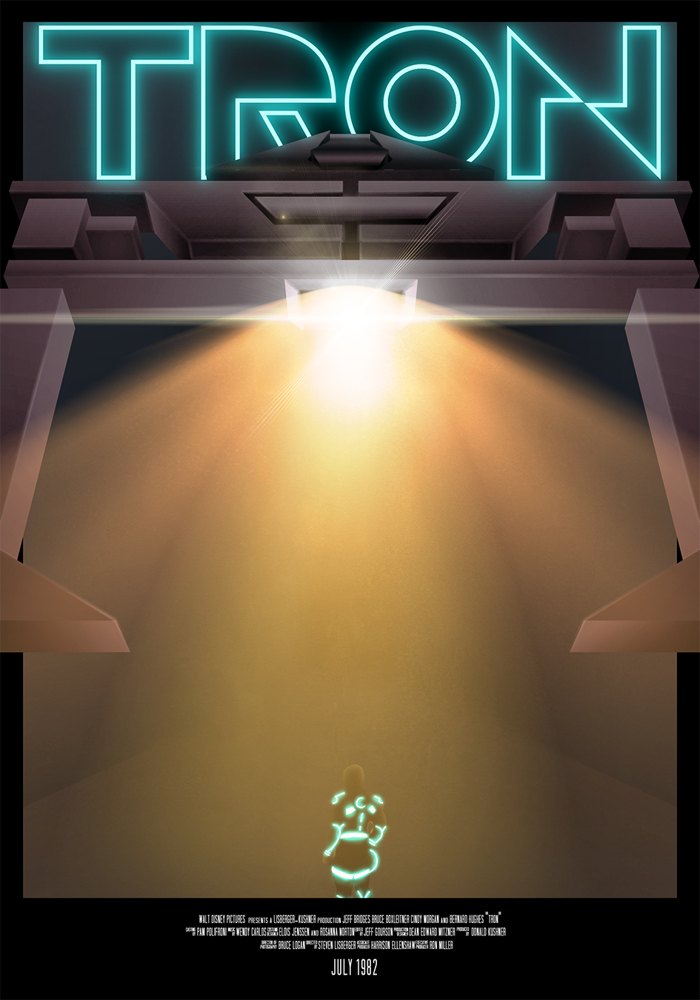

These posters are a set of redesigned posters for some of my favourite films in my personal illustration style. The Lord of the Rings is a redesigned poster for the entire trilogy created by New Line Cinema, however the credits used at the bottom are specifically from The Fellowship of the Ring. The Lord of the Rings is one of the most well- documented film productions in film history, and I wanted to pay tribute to the effort in the films by including a poster of the films here.

The Rocketeer is a 1991 film in the style of a 1930’s pulp fiction story. It follows an every-day hero that is trying to step up to help those around him. For the poster, I used the front of the helmet he wears as it is a symbol of his character and the persona put on to help others. It is also just a fun movie that has a very distinct design language that still holds up today

TRON is a 1982 movie, and was the first film in history to use computer generated imagery in its VFX work. It was doen to such an extent that it was disqualified from winning an Oscar. I wanted to pay tribute to a film that inspired my personal interest in design and effects work by redesigning a poster in the style that it inspired